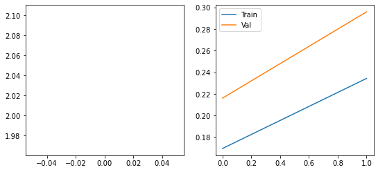
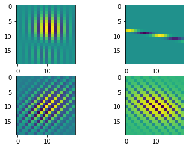
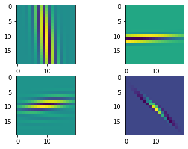
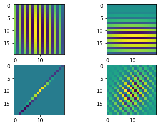

import numpy as np
import matplotlib.pyplot as plt
from einops import rearrange, repeat
import tensorflow as tf
from tensorflow.keras import layers
from tensorflow.keras.datasets import mnist
from flayers.layers import GaborLayerGabor layer experiment
In this quick experiment we will be training an MNIST classifier using multiple
GaborLayer layers.
Library importing
Data loading
We will be using MNIST for a simple and quick test.
(X_train, Y_train), (X_test, Y_test) = mnist.load_data()
X_train = repeat(X_train, "b h w -> b h w c", c=1)/255.0
X_test = repeat(X_test, "b h w -> b h w c", c=1)/255.0
X_train.shape, Y_train.shape, X_test.shape, Y_test.shape((60000, 28, 28, 1), (60000,), (10000, 28, 28, 1), (10000,))Definition of simple model
n_gabors = 4
sigma_i = [0.1, 0.2, 0.1, 0.1]
sigma_j = [0.2, 0.1, 0.2, 0.2]
freq = [10, 10]*2
theta = [0, np.pi/2, np.pi/4, -np.pi/4]
rot_theta = [0, 0]*2
sigma_theta = [0, 0, np.pi/4, -np.pi/4]model = tf.keras.Sequential([
GaborLayer(n_gabors=n_gabors, size=20, imean=0.5, jmean=0.5, sigma_i=sigma_i, sigma_j=sigma_j, freq=freq,
theta=theta, rot_theta=rot_theta, sigma_theta=sigma_theta, fs=20, input_shape=(28,28,1)),
layers.MaxPool2D(2),
GaborLayer(n_gabors=n_gabors, size=20, imean=0.5, jmean=0.5, sigma_i=sigma_i, sigma_j=sigma_j, freq=freq,
theta=theta, rot_theta=rot_theta, sigma_theta=sigma_theta, fs=20),
layers.MaxPool2D(2),
GaborLayer(n_gabors=n_gabors, size=20, imean=0.5, jmean=0.5, sigma_i=sigma_i, sigma_j=sigma_j, freq=freq,
theta=theta, rot_theta=rot_theta, sigma_theta=sigma_theta, fs=20),
layers.MaxPool2D(2),
layers.GlobalAveragePooling2D(),
layers.Dense(10, activation="softmax")
])
model.compile(optimizer="adam",
loss="sparse_categorical_crossentropy",
metrics=["accuracy"])
model.summary()2022-09-08 10:34:16.837755: I tensorflow/core/common_runtime/gpu/gpu_device.cc:1510] Created device /job:localhost/replica:0/task:0/device:GPU:0 with 10793 MB memory: -> device: 0, name: Tesla K40m, pci bus id: 0000:03:00.0, compute capability: 3.5Model: "sequential"
_________________________________________________________________
Layer (type) Output Shape Param #
=================================================================
gabor_layer (GaborLayer) (None, 28, 28, 4) 26
_________________________________________________________________
max_pooling2d (MaxPooling2D) (None, 14, 14, 4) 0
_________________________________________________________________
gabor_layer_1 (GaborLayer) (None, 14, 14, 4) 26
_________________________________________________________________
max_pooling2d_1 (MaxPooling2 (None, 7, 7, 4) 0
_________________________________________________________________
gabor_layer_2 (GaborLayer) (None, 7, 7, 4) 26
_________________________________________________________________
max_pooling2d_2 (MaxPooling2 (None, 3, 3, 4) 0
_________________________________________________________________
global_average_pooling2d (Gl (None, 4) 0
_________________________________________________________________
dense (Dense) (None, 10) 50
=================================================================
Total params: 128
Trainable params: 128
Non-trainable params: 0
_________________________________________________________________We can show the initial Gabor filters:
model.layers[0].show_filters()2022-09-08 10:34:20.497150: I tensorflow/compiler/mlir/mlir_graph_optimization_pass.cc:185] None of the MLIR Optimization Passes are enabled (registered 2)
2022-09-08 10:34:20.716222: I tensorflow/core/util/cuda_solvers.cc:180] Creating CudaSolver handles for stream 0x55ce0961be70
history = model.fit(X_train, Y_train, batch_size=128, epochs=100, validation_split=0.2)Epoch 1/1002022-09-08 10:34:35.055817: I tensorflow/stream_executor/cuda/cuda_dnn.cc:369] Loaded cuDNN version 8100
2022-09-08 10:34:35.517682: I tensorflow/core/platform/default/subprocess.cc:304] Start cannot spawn child process: No such file or directory375/375 [==============================] - 48s 93ms/step - loss: 53.1879 - accuracy: 0.1049 - val_loss: 7.3154 - val_accuracy: 0.1034
Epoch 2/100
375/375 [==============================] - 32s 86ms/step - loss: 5.3019 - accuracy: 0.1095 - val_loss: 3.9903 - val_accuracy: 0.1092
Epoch 3/100
375/375 [==============================] - 32s 84ms/step - loss: 3.3966 - accuracy: 0.1096 - val_loss: 2.9894 - val_accuracy: 0.1128
Epoch 4/100
375/375 [==============================] - 32s 85ms/step - loss: 2.8143 - accuracy: 0.1138 - val_loss: 2.6610 - val_accuracy: 0.1093
Epoch 5/100
375/375 [==============================] - 31s 83ms/step - loss: 2.6076 - accuracy: 0.1096 - val_loss: 2.5345 - val_accuracy: 0.1093
Epoch 6/100
375/375 [==============================] - 32s 84ms/step - loss: 2.5094 - accuracy: 0.1115 - val_loss: 2.4872 - val_accuracy: 0.1034
Epoch 7/100
375/375 [==============================] - 32s 85ms/step - loss: 2.4797 - accuracy: 0.1102 - val_loss: 2.4527 - val_accuracy: 0.1149
Epoch 8/100
375/375 [==============================] - 31s 84ms/step - loss: 2.4442 - accuracy: 0.1089 - val_loss: 2.4189 - val_accuracy: 0.0995
Epoch 9/100
375/375 [==============================] - 32s 84ms/step - loss: 2.4111 - accuracy: 0.1136 - val_loss: 2.4106 - val_accuracy: 0.1101
Epoch 10/100
375/375 [==============================] - 31s 82ms/step - loss: 2.3790 - accuracy: 0.1223 - val_loss: 2.4078 - val_accuracy: 0.1067
Epoch 11/100
375/375 [==============================] - 31s 84ms/step - loss: 2.3550 - accuracy: 0.1175 - val_loss: 2.3210 - val_accuracy: 0.1312
Epoch 12/100
375/375 [==============================] - 31s 84ms/step - loss: 2.3327 - accuracy: 0.1205 - val_loss: 2.2847 - val_accuracy: 0.1443
Epoch 13/100
375/375 [==============================] - 31s 83ms/step - loss: 2.3041 - accuracy: 0.1376 - val_loss: 2.2463 - val_accuracy: 0.1593
Epoch 14/100
375/375 [==============================] - 32s 84ms/step - loss: 2.2641 - accuracy: 0.1545 - val_loss: 2.2457 - val_accuracy: 0.1663
Epoch 15/100
375/375 [==============================] - 32s 84ms/step - loss: 2.2258 - accuracy: 0.1766 - val_loss: 2.1766 - val_accuracy: 0.1941
Epoch 16/100
375/375 [==============================] - 31s 83ms/step - loss: 2.2026 - accuracy: 0.1923 - val_loss: 2.1463 - val_accuracy: 0.1999
Epoch 17/100
375/375 [==============================] - 31s 83ms/step - loss: 2.1474 - accuracy: 0.2165 - val_loss: 2.1283 - val_accuracy: 0.2132
Epoch 18/100
375/375 [==============================] - 31s 84ms/step - loss: 2.1159 - accuracy: 0.2290 - val_loss: 2.1280 - val_accuracy: 0.2051
Epoch 19/100
375/375 [==============================] - 31s 83ms/step - loss: 2.0732 - accuracy: 0.2499 - val_loss: 2.0583 - val_accuracy: 0.2422
Epoch 20/100
375/375 [==============================] - 31s 83ms/step - loss: 2.0469 - accuracy: 0.2644 - val_loss: 2.0433 - val_accuracy: 0.2635
Epoch 21/100
375/375 [==============================] - 31s 84ms/step - loss: 2.0072 - accuracy: 0.2793 - val_loss: 1.9514 - val_accuracy: 0.3022
Epoch 22/100
375/375 [==============================] - 31s 84ms/step - loss: 1.9715 - accuracy: 0.2937 - val_loss: 1.9205 - val_accuracy: 0.3167
Epoch 23/100
375/375 [==============================] - 31s 83ms/step - loss: 1.9412 - accuracy: 0.3064 - val_loss: 1.9068 - val_accuracy: 0.3210
Epoch 24/100
375/375 [==============================] - 32s 84ms/step - loss: 1.9011 - accuracy: 0.3265 - val_loss: 1.9031 - val_accuracy: 0.3142
Epoch 25/100
375/375 [==============================] - 31s 84ms/step - loss: 1.8606 - accuracy: 0.3424 - val_loss: 1.8336 - val_accuracy: 0.3472
Epoch 26/100
375/375 [==============================] - 32s 85ms/step - loss: 1.8083 - accuracy: 0.3580 - val_loss: 1.7510 - val_accuracy: 0.3872
Epoch 27/100
375/375 [==============================] - 31s 84ms/step - loss: 1.7367 - accuracy: 0.3804 - val_loss: 1.6704 - val_accuracy: 0.4014
Epoch 28/100
375/375 [==============================] - 31s 83ms/step - loss: 1.6567 - accuracy: 0.4089 - val_loss: 1.6104 - val_accuracy: 0.4158
Epoch 29/100
375/375 [==============================] - 31s 84ms/step - loss: 1.6048 - accuracy: 0.4255 - val_loss: 1.6363 - val_accuracy: 0.4035
Epoch 30/100
375/375 [==============================] - 32s 84ms/step - loss: 1.5808 - accuracy: 0.4336 - val_loss: 1.5532 - val_accuracy: 0.4347
Epoch 31/100
375/375 [==============================] - 31s 84ms/step - loss: 1.5811 - accuracy: 0.4301 - val_loss: 1.5456 - val_accuracy: 0.4372
Epoch 32/100
375/375 [==============================] - 31s 84ms/step - loss: 1.5584 - accuracy: 0.4395 - val_loss: 1.5234 - val_accuracy: 0.4523
Epoch 33/100
375/375 [==============================] - 31s 84ms/step - loss: 1.5462 - accuracy: 0.4460 - val_loss: 1.5257 - val_accuracy: 0.4435
Epoch 34/100
375/375 [==============================] - 31s 84ms/step - loss: 1.5447 - accuracy: 0.4480 - val_loss: 1.5121 - val_accuracy: 0.4565
Epoch 35/100
375/375 [==============================] - 32s 84ms/step - loss: 1.5296 - accuracy: 0.4507 - val_loss: 1.4809 - val_accuracy: 0.4688
Epoch 36/100
375/375 [==============================] - 31s 83ms/step - loss: 1.5185 - accuracy: 0.4546 - val_loss: 1.4982 - val_accuracy: 0.4582
Epoch 37/100
375/375 [==============================] - 31s 84ms/step - loss: 1.5169 - accuracy: 0.4600 - val_loss: 1.5149 - val_accuracy: 0.4624
Epoch 38/100
375/375 [==============================] - 31s 84ms/step - loss: 1.5138 - accuracy: 0.4566 - val_loss: 1.4959 - val_accuracy: 0.4627
Epoch 39/100
375/375 [==============================] - 31s 83ms/step - loss: 1.5086 - accuracy: 0.4624 - val_loss: 1.4718 - val_accuracy: 0.4706
Epoch 40/100
375/375 [==============================] - 31s 84ms/step - loss: 1.4964 - accuracy: 0.4683 - val_loss: 1.4679 - val_accuracy: 0.4793
Epoch 41/100
375/375 [==============================] - 31s 83ms/step - loss: 1.4886 - accuracy: 0.4685 - val_loss: 1.4985 - val_accuracy: 0.4667
Epoch 42/100
375/375 [==============================] - 31s 83ms/step - loss: 1.4891 - accuracy: 0.4676 - val_loss: 1.4734 - val_accuracy: 0.4684
Epoch 43/100
375/375 [==============================] - 31s 83ms/step - loss: 1.4848 - accuracy: 0.4669 - val_loss: 1.4741 - val_accuracy: 0.4692
Epoch 44/100
375/375 [==============================] - 32s 84ms/step - loss: 1.4766 - accuracy: 0.4696 - val_loss: 1.4268 - val_accuracy: 0.4825
Epoch 45/100
375/375 [==============================] - 31s 84ms/step - loss: 1.4670 - accuracy: 0.4722 - val_loss: 1.4451 - val_accuracy: 0.4750
Epoch 46/100
375/375 [==============================] - 32s 84ms/step - loss: 1.4540 - accuracy: 0.4767 - val_loss: 1.4312 - val_accuracy: 0.4805
Epoch 47/100
375/375 [==============================] - 31s 83ms/step - loss: 1.4428 - accuracy: 0.4812 - val_loss: 1.4503 - val_accuracy: 0.4914
Epoch 48/100
375/375 [==============================] - 31s 84ms/step - loss: 1.4278 - accuracy: 0.4873 - val_loss: 1.4017 - val_accuracy: 0.4925
Epoch 49/100
375/375 [==============================] - 31s 84ms/step - loss: 1.4165 - accuracy: 0.4905 - val_loss: 1.4208 - val_accuracy: 0.4890
Epoch 50/100
375/375 [==============================] - 32s 85ms/step - loss: 1.4010 - accuracy: 0.4993 - val_loss: 1.4191 - val_accuracy: 0.4840
Epoch 51/100
375/375 [==============================] - 31s 83ms/step - loss: 1.4121 - accuracy: 0.4986 - val_loss: 1.4070 - val_accuracy: 0.4935
Epoch 52/100
375/375 [==============================] - 32s 84ms/step - loss: 1.3885 - accuracy: 0.5073 - val_loss: 1.3196 - val_accuracy: 0.5315
Epoch 53/100
375/375 [==============================] - 31s 84ms/step - loss: 1.3459 - accuracy: 0.5233 - val_loss: 1.2969 - val_accuracy: 0.5447
Epoch 54/100
375/375 [==============================] - 31s 84ms/step - loss: 1.3271 - accuracy: 0.5345 - val_loss: 1.2875 - val_accuracy: 0.5379
Epoch 55/100
375/375 [==============================] - 31s 84ms/step - loss: 1.2776 - accuracy: 0.5522 - val_loss: 1.2711 - val_accuracy: 0.5491
Epoch 56/100
375/375 [==============================] - 31s 83ms/step - loss: 1.2435 - accuracy: 0.5665 - val_loss: 1.1660 - val_accuracy: 0.5891
Epoch 57/100
375/375 [==============================] - 32s 84ms/step - loss: 1.2121 - accuracy: 0.5772 - val_loss: 1.2255 - val_accuracy: 0.5617
Epoch 58/100
375/375 [==============================] - 31s 84ms/step - loss: 1.1980 - accuracy: 0.5801 - val_loss: 1.1337 - val_accuracy: 0.6062
Epoch 59/100
375/375 [==============================] - 31s 83ms/step - loss: 1.1790 - accuracy: 0.5876 - val_loss: 1.1356 - val_accuracy: 0.6012
Epoch 60/100
375/375 [==============================] - 32s 84ms/step - loss: 1.1755 - accuracy: 0.5922 - val_loss: 1.1313 - val_accuracy: 0.6167
Epoch 61/100
375/375 [==============================] - 32s 84ms/step - loss: 1.1651 - accuracy: 0.5947 - val_loss: 1.0896 - val_accuracy: 0.6202
Epoch 62/100
375/375 [==============================] - 32s 85ms/step - loss: 1.1618 - accuracy: 0.5923 - val_loss: 1.1167 - val_accuracy: 0.6120
Epoch 63/100
375/375 [==============================] - 32s 84ms/step - loss: 1.1650 - accuracy: 0.5919 - val_loss: 1.1560 - val_accuracy: 0.5888
Epoch 64/100
375/375 [==============================] - 31s 83ms/step - loss: 1.1635 - accuracy: 0.5930 - val_loss: 1.1428 - val_accuracy: 0.5931
Epoch 65/100
375/375 [==============================] - 32s 84ms/step - loss: 1.1531 - accuracy: 0.5959 - val_loss: 1.1195 - val_accuracy: 0.6190
Epoch 66/100
375/375 [==============================] - 31s 84ms/step - loss: 1.1429 - accuracy: 0.5994 - val_loss: 1.1284 - val_accuracy: 0.6047
Epoch 67/100
375/375 [==============================] - 32s 85ms/step - loss: 1.1529 - accuracy: 0.5981 - val_loss: 1.0952 - val_accuracy: 0.5988
Epoch 68/100
375/375 [==============================] - 32s 85ms/step - loss: 1.1473 - accuracy: 0.5980 - val_loss: 1.1129 - val_accuracy: 0.6061
Epoch 69/100
375/375 [==============================] - 32s 84ms/step - loss: 1.1499 - accuracy: 0.5992 - val_loss: 1.1366 - val_accuracy: 0.5915
Epoch 70/100
375/375 [==============================] - 31s 84ms/step - loss: 1.1427 - accuracy: 0.6019 - val_loss: 1.1129 - val_accuracy: 0.6050
Epoch 71/100
375/375 [==============================] - 32s 84ms/step - loss: 1.1423 - accuracy: 0.6016 - val_loss: 1.0861 - val_accuracy: 0.6235
Epoch 72/100
375/375 [==============================] - 31s 83ms/step - loss: 1.1442 - accuracy: 0.6015 - val_loss: 1.0953 - val_accuracy: 0.6167
Epoch 73/100
375/375 [==============================] - 31s 83ms/step - loss: 1.1404 - accuracy: 0.6027 - val_loss: 1.0821 - val_accuracy: 0.6258
Epoch 74/100
375/375 [==============================] - 31s 84ms/step - loss: 1.1381 - accuracy: 0.6028 - val_loss: 1.0807 - val_accuracy: 0.6184
Epoch 75/100
375/375 [==============================] - 32s 84ms/step - loss: 1.1371 - accuracy: 0.6028 - val_loss: 1.1134 - val_accuracy: 0.6093
Epoch 76/100
375/375 [==============================] - 31s 84ms/step - loss: 1.1368 - accuracy: 0.6026 - val_loss: 1.0980 - val_accuracy: 0.6192
Epoch 77/100
375/375 [==============================] - 32s 84ms/step - loss: 1.1358 - accuracy: 0.6011 - val_loss: 1.0954 - val_accuracy: 0.6200
Epoch 78/100
375/375 [==============================] - 32s 84ms/step - loss: 1.1355 - accuracy: 0.6033 - val_loss: 1.0864 - val_accuracy: 0.6213
Epoch 79/100
375/375 [==============================] - 31s 84ms/step - loss: 1.1341 - accuracy: 0.6044 - val_loss: 1.0845 - val_accuracy: 0.6324
Epoch 80/100
375/375 [==============================] - 31s 83ms/step - loss: 1.1281 - accuracy: 0.6066 - val_loss: 1.0840 - val_accuracy: 0.6214
Epoch 81/100
375/375 [==============================] - 31s 83ms/step - loss: 1.1289 - accuracy: 0.6078 - val_loss: 1.0778 - val_accuracy: 0.6225
Epoch 82/100
375/375 [==============================] - 31s 82ms/step - loss: 1.1215 - accuracy: 0.6140 - val_loss: 1.0911 - val_accuracy: 0.6226
Epoch 83/100
375/375 [==============================] - 31s 83ms/step - loss: 1.1226 - accuracy: 0.6105 - val_loss: 1.0986 - val_accuracy: 0.6091
Epoch 84/100
375/375 [==============================] - 31s 82ms/step - loss: 1.1257 - accuracy: 0.6101 - val_loss: 1.0672 - val_accuracy: 0.6291
Epoch 85/100
375/375 [==============================] - 31s 83ms/step - loss: 1.1243 - accuracy: 0.6114 - val_loss: 1.1310 - val_accuracy: 0.5987
Epoch 86/100
375/375 [==============================] - 31s 82ms/step - loss: 1.1177 - accuracy: 0.6140 - val_loss: 1.1025 - val_accuracy: 0.6118
Epoch 87/100
375/375 [==============================] - 31s 82ms/step - loss: 1.1271 - accuracy: 0.6094 - val_loss: 1.0622 - val_accuracy: 0.6336
Epoch 88/100
375/375 [==============================] - 31s 82ms/step - loss: 1.1154 - accuracy: 0.6149 - val_loss: 1.0563 - val_accuracy: 0.6302
Epoch 89/100
375/375 [==============================] - 31s 83ms/step - loss: 1.1144 - accuracy: 0.6124 - val_loss: 1.0903 - val_accuracy: 0.6252
Epoch 90/100
375/375 [==============================] - 32s 86ms/step - loss: 1.1130 - accuracy: 0.6158 - val_loss: 1.0602 - val_accuracy: 0.6350
Epoch 91/100
375/375 [==============================] - 32s 86ms/step - loss: 1.1144 - accuracy: 0.6123 - val_loss: 1.1094 - val_accuracy: 0.6087
Epoch 92/100
375/375 [==============================] - 32s 86ms/step - loss: 1.1163 - accuracy: 0.6133 - val_loss: 1.0637 - val_accuracy: 0.6292
Epoch 93/100
375/375 [==============================] - 33s 87ms/step - loss: 1.1192 - accuracy: 0.6123 - val_loss: 1.0625 - val_accuracy: 0.6440
Epoch 94/100
375/375 [==============================] - 32s 86ms/step - loss: 1.1050 - accuracy: 0.6199 - val_loss: 1.1102 - val_accuracy: 0.6156
Epoch 95/100
375/375 [==============================] - 32s 86ms/step - loss: 1.1138 - accuracy: 0.6153 - val_loss: 1.0942 - val_accuracy: 0.6236
Epoch 96/100
375/375 [==============================] - 32s 86ms/step - loss: 1.1144 - accuracy: 0.6158 - val_loss: 1.0695 - val_accuracy: 0.6322
Epoch 97/100
375/375 [==============================] - 32s 86ms/step - loss: 1.1093 - accuracy: 0.6160 - val_loss: 1.0768 - val_accuracy: 0.6174
Epoch 98/100
375/375 [==============================] - 32s 86ms/step - loss: 1.1074 - accuracy: 0.6148 - val_loss: 1.0555 - val_accuracy: 0.6313
Epoch 99/100
375/375 [==============================] - 32s 86ms/step - loss: 1.1076 - accuracy: 0.6152 - val_loss: 1.0380 - val_accuracy: 0.6418
Epoch 100/100
375/375 [==============================] - 33s 87ms/step - loss: 1.1100 - accuracy: 0.6158 - val_loss: 1.0540 - val_accuracy: 0.6360Showing the training dynamics:
fig, axes = plt.subplots(1,2, figsize=(9,4))
axes[0].plot(history.history['loss'][1:], label="Train")
axes[0].plot(history.history['val_loss'][1:], label="Val")
axes[1].plot(history.history['accuracy'], label="Train")
axes[1].plot(history.history['val_accuracy'], label="Val")
plt.legend()
plt.show()
Calculate the metrics in the test set:
model.evaluate(X_test, Y_test, batch_size=128)79/79 [==============================] - 3s 36ms/step - loss: 1.0928 - accuracy: 0.6304[1.0928494930267334, 0.6304000020027161]We can visualize the gabor filters after the training process:
model.layers[0].show_filters()
model.layers[2].show_filters()
model.layers[4].show_filters()
We can even check the atributes of the layer to inspect the change in the initial parameters:
model.layers[0].theta.numpy()*180/np.piarray([ 0.38321877, 90.76502 , 45.756405 , -47.088924 ],
dtype=float32)model.layers[0].rot_theta.numpy()*180/np.piarray([ 0.39840868, -0.8525029 , -0.04723335, -1.0895499 ], dtype=float32)model.layers[0].sigma_theta.numpy()*180/np.piarray([-45.138485, 9.870471, 55.021404, -44.676727], dtype=float32)